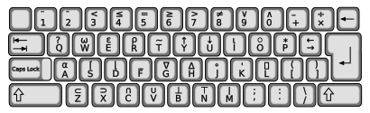

An APL session, compiled to WebAssembly and running in a worker in this tab. There is no server: nothing typed here leaves your browser, and nothing is sent anywhere.

⍴
⎕
⍟
○
*
⍝
∩
∘
APL80 is typed on the TRS-80's own keyboard, which has no APL characters. An unshifted letter is a capital, for names. A shifted letter is a symbol, and the screen shows it as the letter with a dot at its left: shifted P, ·P, is ⍴, and shifted I, ·I, is ⍳, so ·I3 gives 1 2 3.
⍳
1 2 3
%
@
$
&
"
-
-3
_
5_2
M-N
[ \ ] ^
↑ ↓ ← →
A(2)
+/1·DM
#
)RAM
)DEF
)LIB 1 lists the workspaces sw-apl ships; )LOAD 1 RACELIFE loads one. )SAVE writes library 0 into this browser's own storage, so a saved workspace comes back next time you open this page in this browser -- and is in no other browser and on no other machine.
)LIB 1
)LOAD 1 RACELIFE
)SAVE
)LIBS lists the libraries this page reaches: 0 is yours, 1 is what sw-apl ships, and 2 is EXTENDED, the workspaces kept in the sw-apl-workspaces repository. )LIB 2 lists them and )LOAD 2 COURSE loads one. Only library 0 can be saved to.
)LIBS
)LIB 2
)LOAD 2 COURSE
)HELP lists the commands this mode has, and )HELP LOAD (or any command, or )HELP TOPICS) shows a page. )DIALECT says which mode you are in.
)HELP
)HELP LOAD
)HELP TOPICS
)DIALECT
There is no del. )DEF Z←SQ X opens a new function and asks for line 1; each line typed is the next, and an empty line, for the TRS-80's BREAK, closes it. )EDIT SQ reopens one. While it is open:
)DEF Z←SQ X
)EDIT SQ
)?
)P 5
)3
)0
)E 3
A name already in use is a DEFN ERROR: )ERASE it, or open it with )EDIT. )HELP EDITOR has the whole list.
)ERASE
)EDIT
)HELP EDITOR
16384
7
51 # 65
)DOS
DIR
KILL NAME
RETURN
)TRON
)PS
)PD
)AUTO
)EXEC
∇Z←S W;V opens a new function, and the prompt [1] numbers the line you type next; ∇ closes it. ∇S reopens one. While it is open:
∇Z←S W;V
[1]
∇
∇S
[3]
[3] text
[1.5]
[∆3]
[⎕]
[3⎕]
[⎕3]
∇S[⎕]∇
[3⎕10]
/
A function name already in use is a DEFN ERROR: )ERASE it, or reopen it with ∇NAME. )HELP EDITOR has the whole list.
∇NAME
The page runs one mode, named at the top beside sw-apl, which leads back to the timeline, where the other modes are. C '80 is TRS-80-inspired: APL80's own characters on a 64-by-16 screen, functions defined with )DEF, and the machine's memory and DOS within reach. It lists and loads only the workspaces that run in it, and a new mode is a new session in a clear workspace, so )SAVE first what you want to keep.
The page runs one mode, named at the top beside sw-apl, which leads back to the timeline; each mode is reached from its place on the timeline. A '70 is APL\360-inspired. B '75 is IBM 5100-inspired: it adds execute ⍎ and the quad system variables and functions such as ⎕IO and ⎕FX, and has no I-beams and no )ORIGIN, )DIGITS or )WIDTH. C '80 is TRS-80-inspired: it is typed in APL80's own characters, a shifted letter for a symbol, and defines functions with )DEF. Each mode lists and loads only the workspaces that run in it, and a new mode is a new session in a clear workspace, so )SAVE first what you want to keep.
⍎
⎕IO
⎕FX
)ORIGIN
)DIGITS
)WIDTH
Once this page has loaded, sw-apl runs without the network: the interpreter is here in the tab, and workspaces you save are kept in this browser. Reload it offline, or open it from your home screen, and it starts as before; offline at the foot of the page says the network is off. Library 2 comes from another repository, so it is there offline only if it was reached before. Online, the page always takes the newest build.
The interpreter stops and waits for a line, which needs a SharedArrayBuffer, which a browser grants only to an isolated page. Served locally by just demo or just pages-serve, that is two headers and it simply works. A static host will not send them, so the published page installs a service worker to add them and loads once more under it. If the browser will not install it, the page clears out what this site left in the browser and tries again before it gives up; the words after the colon say why it stopped.
SharedArrayBuffer
just demo
just pages-serve
The screen and the board are drawn in JuliaMono, by Cormullion, under the SIL Open Font License, fetched from its own release and not kept here.
The keyboard picture is by Rursus, under CC BY-SA 3.0; the glyphs are drawn in APL385 Unicode, by Adrian Smith, public domain. The terms travel with them, in apl-keyboard and apl385-font.
What this browser said, to send with a report: